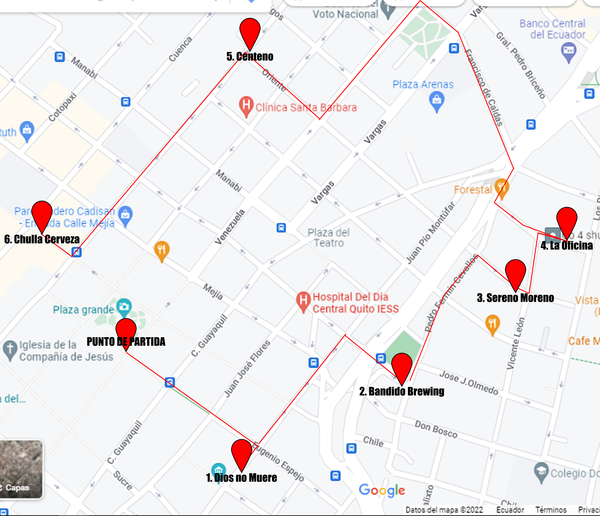

RUTA DE LA CERVEZA
En esta ruta exclusiva de cerveza podras visitar las 6 cervezas que encabezan nuestra lista:
- Cafe Dios no Muere
- Bandido
- Sereno Moreno
- La Oficina
- Centeno
- Chulla Cerveza

Agregar
Vive junto a nosotros una de las mejores experiencias en tu visita por el centro historico, visitares los mejores bares de cerveza artesanal de Quito, cerveza rubia, roja y negra con un sabor unico y acompañado de un ambiente colonia e inconfundible
En esta ruta exclusiva de cerveza podras visitar las 6 cervezas que encabezan nuestra lista:
En esta ruta podras disfrutar de cerveza artesanal y de los mejores restaurantes:

Acompañanos a recorrer la calle de las 7 iglesias y visitar los manasterios?

Los mejores hoteles para una placentara estadia en la capital

Disfruta de la mejor gastronomia tanto local con extranjera